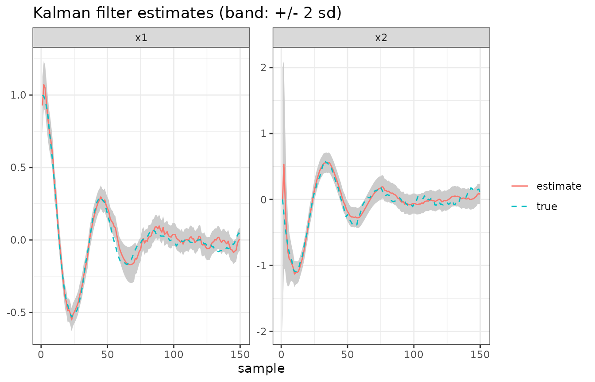

Luenberger observers
When only y = Cx is measured, an
observer reconstructs the state:
\dot{\hat x} = A \hat x + B u + L (y - C \hat x - D u).
The error e = x - \hat x obeys
\dot e = (A - LC) e, so L
is a pole placement problem for the dual pair (A^\top, C^\top):
plant <- ctrl_ss(matrix(c(0, 1, -2, -0.5), 2, byrow = TRUE), c(0, 1), c(1, 0))
obs <- ctrl_observer(plant, poles = c(-6, -7))
obs
#> Luenberger observer (continuous time)
#> L =
#> [,1]
#> [1,] 12.50
#> [2,] 33.75
#> attr(,"poles")
#> [1] -7+0i -6+0i
#> attr(,"cond_X")
#> [1] 73.5136
#> attr(,"max_error")
#> [1] 9.414691e-14
#> estimator poles: -7+0i, -6+0iThe steady-state Kalman filter
For x_{k+1} = A x_k + B u_k + G w_k,
y_k = C x_k + D u_k + v_k with noise
covariances Q_n and R_n, ctrl_kalman() returns the
steady-state gains. The conventions are stated precisely because
packages differ:
-
Pis the prior (predicted) covariance P_{k|k-1}; -
Mis the measurement update gain, \hat x_{k|k} = \hat x_{k|k-1} + M (y_k - C \hat x_{k|k-1} - D u_k); -
Lis the one-step predictor gain (L = AM without cross covariance); -
Zis the posterior covariance P_{k|k}.
pd <- ctrl_c2d(plant, 0.1)
kf <- ctrl_kalman(pd, Qn = diag(c(1e-4, 1e-3)), Rn = 0.01)
kf$M
#> [,1]
#> [1,] 0.15613190
#> [2,] 0.08539392
kf$poles
#> [1] 0.8844266+0.1431844i 0.8844266-0.1431844iRn must be positive definite. Noise-free measurements
make the filtering problem singular, and the package refuses it rather
than adding an invisible regularization.
The time-varying filter and smoother
ctrl_kalman_filter() processes data with the Joseph-form
covariance update, which stays symmetric positive semidefinite in
floating point. It returns innovations, their covariances, the
normalized innovation squared (NIS) and the Gaussian log-likelihood;
missing samples (NA) skip the update:
set.seed(1)
Tn <- 150
x <- c(1, 0)
X <- matrix(0, Tn, 2)
y <- numeric(Tn)
for (k in 1:Tn) {
X[k, ] <- x
y[k] <- x[1] + rnorm(1, sd = 0.1)
x <- drop(pd$A %*% x) + rnorm(2, sd = c(0.01, 0.03))
}
y[60:70] <- NA
run <- ctrl_kalman_filter(pd, y, Qn = diag(c(1e-4, 1e-3)), Rn = 0.01,
x0 = c(0, 0), P0 = diag(2))
run
#> Kalman filter run over 150 samples, 2 states
#> log-likelihood: 103.339
#> mean NIS: 1.038 (expected 1 for a consistent filter)
plot(run, truth = X)
A consistent filter has a mean NIS close to the number of outputs; much larger values point to underestimated noise or a wrong model. The Rauch-Tung-Striebel smoother uses all the data for every estimate:
sm <- ctrl_kalman_smoother(run)
c(filter = sqrt(mean((run$filtered[, 1] - X[, 1])^2)),
smoother = sqrt(mean((sm$smoothed[, 1] - X[, 1])^2)))
#> filter smoother
#> 0.04322331 0.03344030Covariances are inverted only on their support, and that support is decided after scaling the covariance to unit diagonal. A small but positive variance therefore stays informative whatever the units of the other states. Here the first state has prior variance 1e14 and is never measured; the second is constant with prior variance 1 and one measurement of variance 0.01, so its smoothed mean is exactly 1/1.01:
Gs <- ctrl_ss(diag(2), matrix(0, 2, 1), matrix(c(0, 1), 1), dt = 1)
f2 <- ctrl_kalman_filter(Gs, c(NA, 1), Qn = matrix(0, 2, 2), Rn = 0.01,
P0 = diag(c(1e14, 1)))
ctrl_kalman_smoother(f2)$smoothed[, 2] - 1 / 1.01
#> [1] 2.220446e-16 2.220446e-16Prior means, measurements and noise covariances must be finite;
NA rows in y mark missing samples.
LQG control
An LQG controller combines LQR with a Kalman filter. By the separation principle the closed-loop poles are the union of the regulator and estimator poles:
lqg <- ctrl_lqg(pd, Q = diag(c(1, 0.1)), R = 0.1, Qn = diag(c(1e-4, 1e-3)),
Rn = 0.01, form = "current")
lqg
#> LQG controller (discrete time, dt = 0.1, current form)
#> regulator poles: 0.8856+0.1429i, 0.8856-0.1429i
#> estimator poles: 0.8844+0.1432i, 0.8844-0.1432i
cl <- ctrl_closed_loop(pd, lqg)
sort(Mod(ctrl_poles(cl)))
#> [1] 0.8959421 0.8959421 0.8970555 0.8970555
sort(Mod(c(lqg$lqr$poles, lqg$kalman$poles)))
#> [1] 0.8959421 0.8959421 0.8970555 0.8970555In discrete time the "current" form uses \hat x_{k|k}, reacting to the newest
measurement; the "delayed" form uses the predictor \hat x_{k|k-1}, leaving a full sample for
computation.
Stochastic simulation over many realizations
A stochastic design should be judged over many noise realizations, not one favorable trajectory:
sim <- ctrl_simulate_lqg(pd, lqg, steps = 200, x0 = c(1, 0),
replications = 20, seed = 3)
summary(sim$summary[, -1])
#> rms_estimation_error average_cost
#> Min. :0.1267 Min. :0.04288
#> 1st Qu.:0.1366 1st Qu.:0.04660
#> Median :0.1408 Median :0.04875
#> Mean :0.1407 Mean :0.04857
#> 3rd Qu.:0.1457 3rd Qu.:0.05078
#> Max. :0.1493 Max. :0.05293No guaranteed margins
LQR with full state feedback has at least 60 degrees of phase margin,
but an LQG controller has no guaranteed margins at all (Doyle, 1978).
Always check the margins of the actual loop. The controller maps
y to u including the minus sign, so the loop
transfer function for the unity negative feedback convention is L = -K_c G:
Lloop <- ctrl_series(-lqg$controller, pd)
ctrl_disk_margin(Lloop)
#> Disk margin (skew 0): alpha = 1.355 at w = 2.444
#> gain margin: [0.1922, 5.204] (-14.33 to 14.33 dB)
#> phase margin: +/- 68.24 deg
ctrl_peak(ctrl_feedback(1, Lloop))
#> $gain
#> [1] 1.219167
#>
#> $frequency
#> [1] 2.55897The disk margin and the sensitivity peak summarize how far the Nyquist curve stays from the critical point.
Nonlinear models
For nonlinear models, ctrl_ekf() and
ctrl_ukf() follow the same conventions; see the article on
nonlinear systems. The UKF covariance update uses the same support rule,
so for a linear model it reproduces the Kalman filter even when the
prior variances differ by many orders of magnitude.